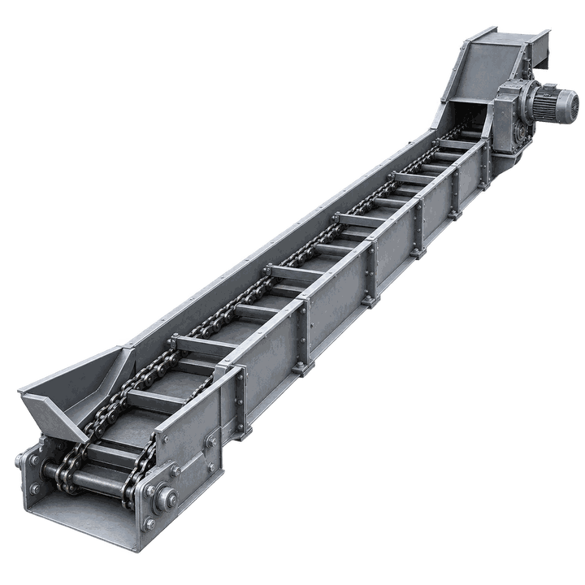
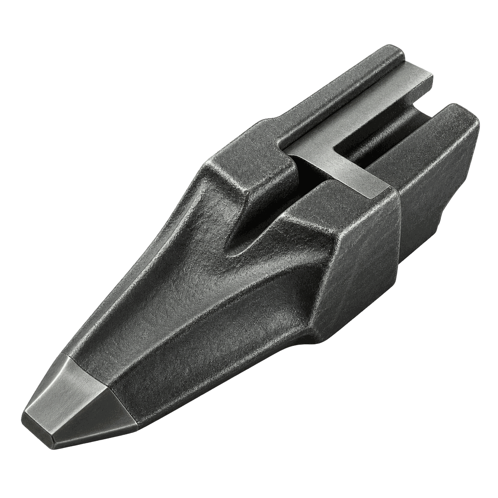
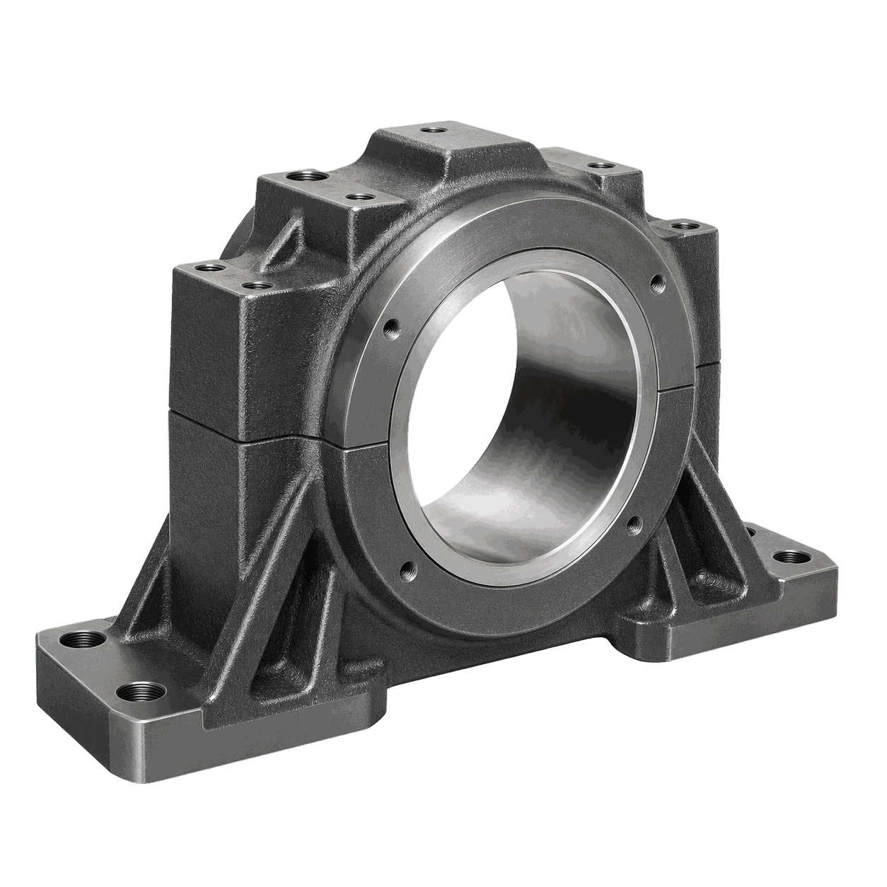
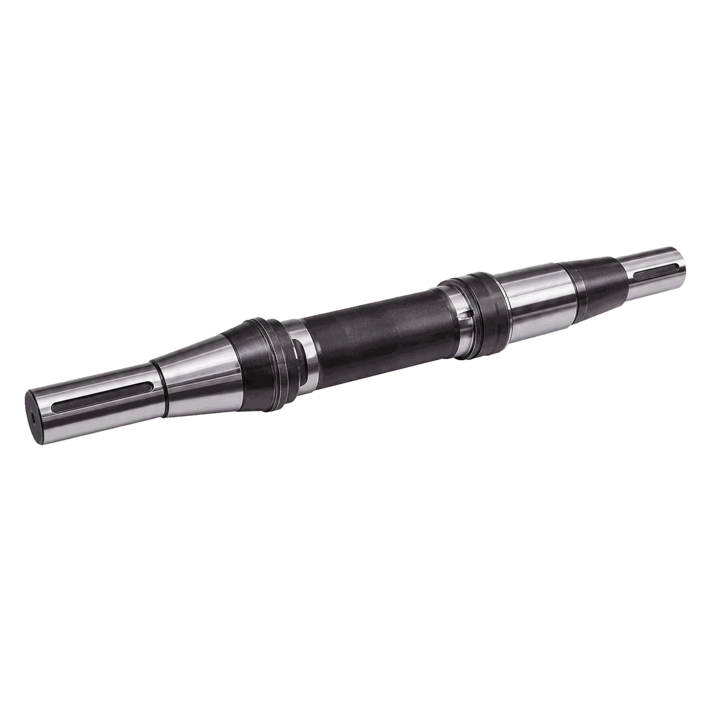
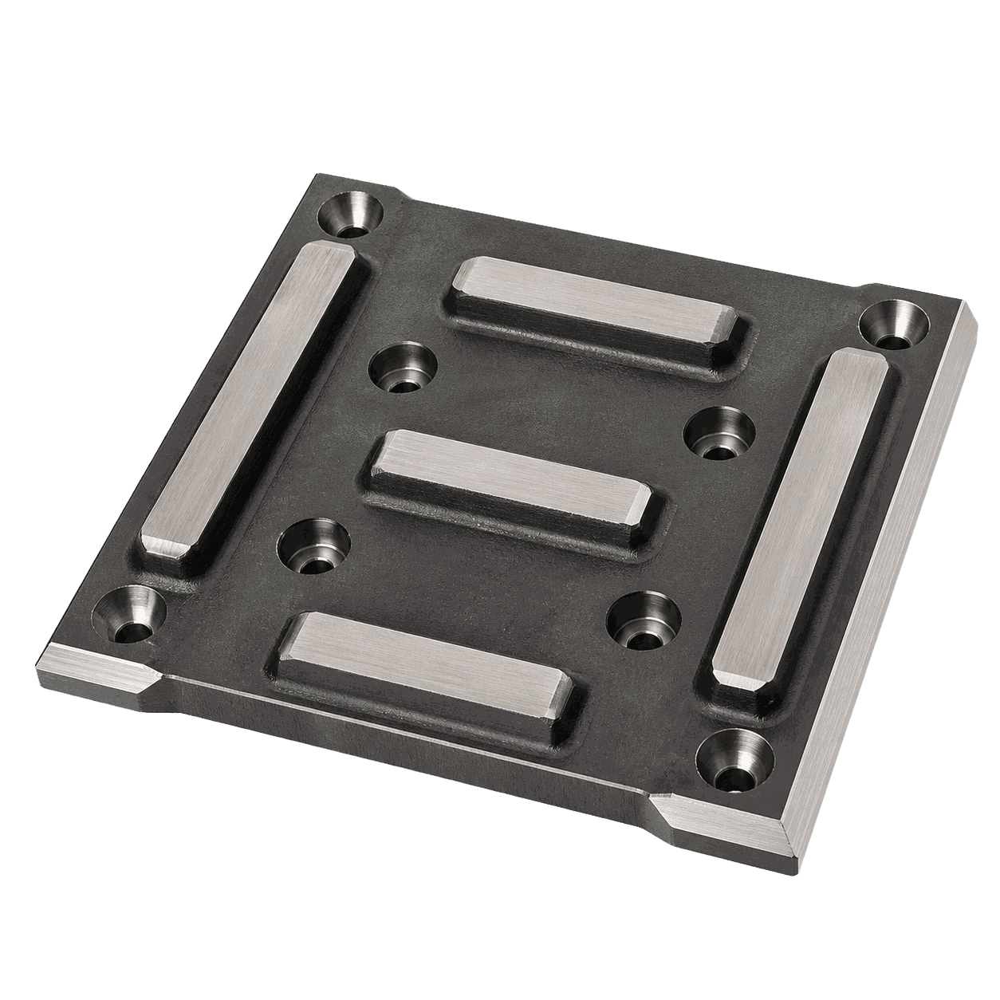
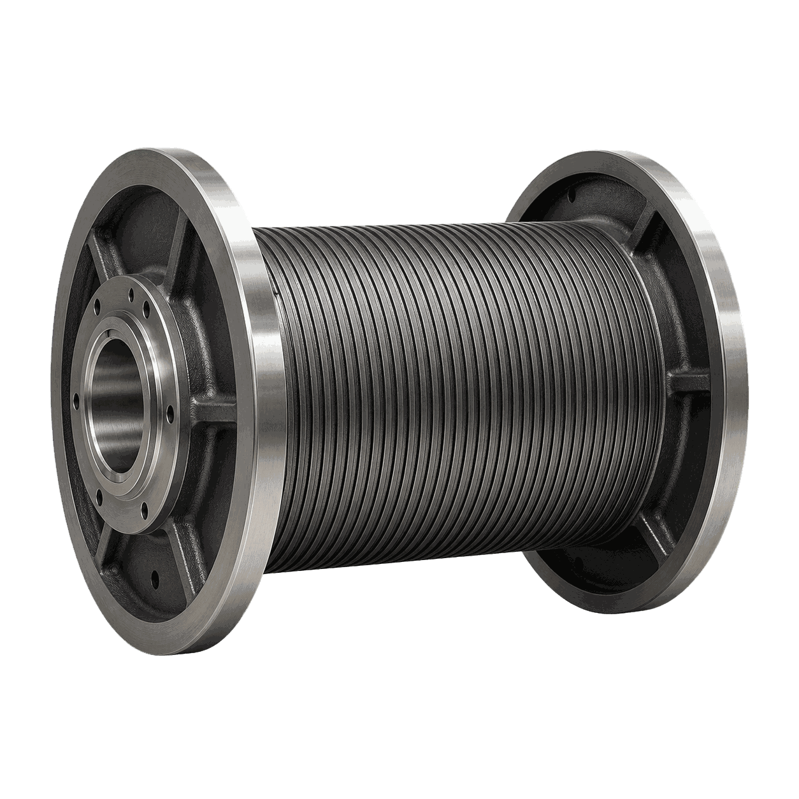

Скребковый перегружатель
Технологическая задача
Построить маршрут обработки детали «Скребковый перегружатель» с понятным разделением операций и подбором оборудования под каждую операцию.
Горнорудная промышленность: детали, технологии, оборудование
Решения для тяжёлых и износостойких деталей горнорудного оборудования: корпуса, валы, плиты, барабаны и элементы перегрузки.

Построить маршрут обработки детали «Скребковый перегружатель» с понятным разделением операций и подбором оборудования под каждую операцию.

Обеспечить точность базовых плоскостей, посадочных отверстий и сопрягаемых поверхностей детали «Корпус буровых коронок».

Обеспечить точность базовых плоскостей, посадочных отверстий и сопрягаемых поверхностей детали «Корпус подшипникового узла».

Обеспечить соосность шеек, стабильную геометрию детали «Приводной вал» и чистоту рабочих поверхностей.

Сформировать базовые плоскости, контуры и отверстия детали «Футеровочная плита» без потери геометрии на крупной заготовке.

Построить маршрут обработки детали «Барабан лебёдки» с понятным разделением операций и подбором оборудования под каждую операцию.
Разрабатываем маршрут обработки и подбираем оборудование под требования детали.
Гарантируем точность, повторяемость и соответствие стандартам отрасли.
От подбора оборудования до ПНР, наладки и сервисного сопровождения.
Оптимизируем цикл обработки и снижаем себестоимость детали.